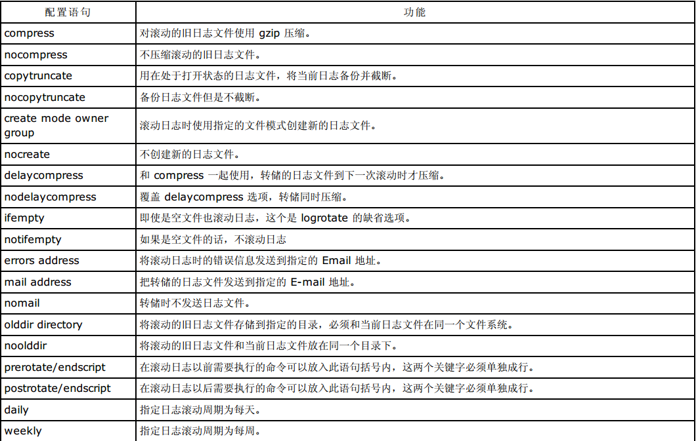
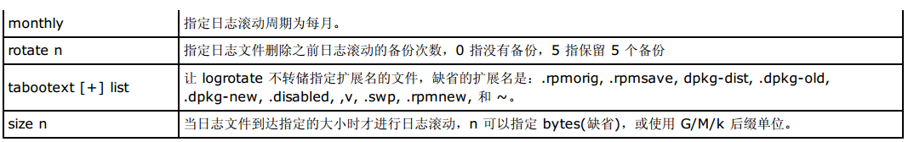

为什么使用日志滚动
所有的日志文件都会随着时间的推移和访问次数的增加而迅速增长，因此必须对日志文件进行定期清理以免造成磁盘空 间的不必要的浪费。同时也加快了管理员查看日志所用的时间，因为打开小文件的速度比打开大文件的速度要快。
logrotate
Linux 下有一个专门的日志滚动处理程序 logrotate 能够自动完成日志的压缩、备份、删除、和日志邮寄等工作。每个日志文件都可被设置成每日，每周或每月处理，也能在文件太大时立即处理。一般把 logrota te 加入 到系统每天执行的计划任务中，这样就省得管理员自己去处理了。
其命令格式为：
<configfile> 是 logrotate 命令的配置文件的路径。
logrotate 的配置文件
管理员可以在 logrota te 的配置文件中设置日志的滚动周期，日志的备份数目，以及如何备份日志等等。
- logrota te 默认的主配置文件是 /etc/logrotate.conf
- /etc/logrotate.d 的目录下的文件，这些文件被 include 到主配置文件 /etc/logrotate.conf 中
在这些文件中可以使用如下的配置语句。
 2.在 /etc/logrotate.conf 中使用 include 语句包含的配置文件中也可以使用上述的配置语句，被 include 的 配置文件中的语句会覆盖 /etc/logrotate.conf 中的配置